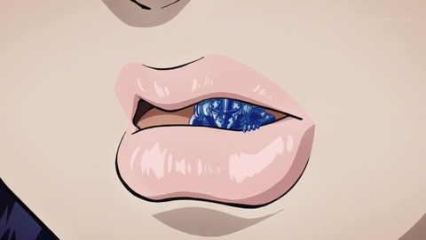
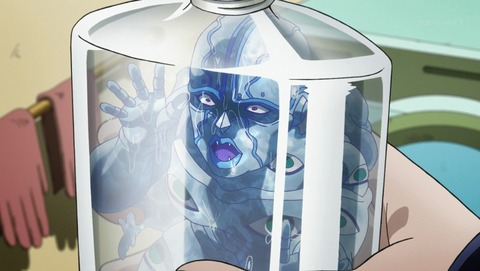

１、失われた水分を補給
朝に1杯の水を飲むと良いとされる理由は、寝ている間に汗として失われた水分を補給することができるため。 寝ている間に失われる水分の量は200mlから300mlと言われており、ちょうどコップ1杯の量に相当します。

２、身体を目覚めさせてくれる
1杯の水は体への水分補給だけでなく、体を目覚めさせるためにも大きな役割を果たします。 水を飲んで胃腸に刺激を送ることで交感神経と副交感神経の働きが切り替わり、寝起きの気分をすっきりさせてくれるのです。
３、正しい飲み方とは
お茶やコーヒーなどのカフェインが入った飲み物には利尿作用があり、逆に体から水分を出そうとしてしまいます。 また、糖分の多い清涼飲料水も体に吸収されるのに時間がかかるためオススメできません。 朝起きて飲む水は、常温のものか白湯にしておきましょう。
４、あああああ
